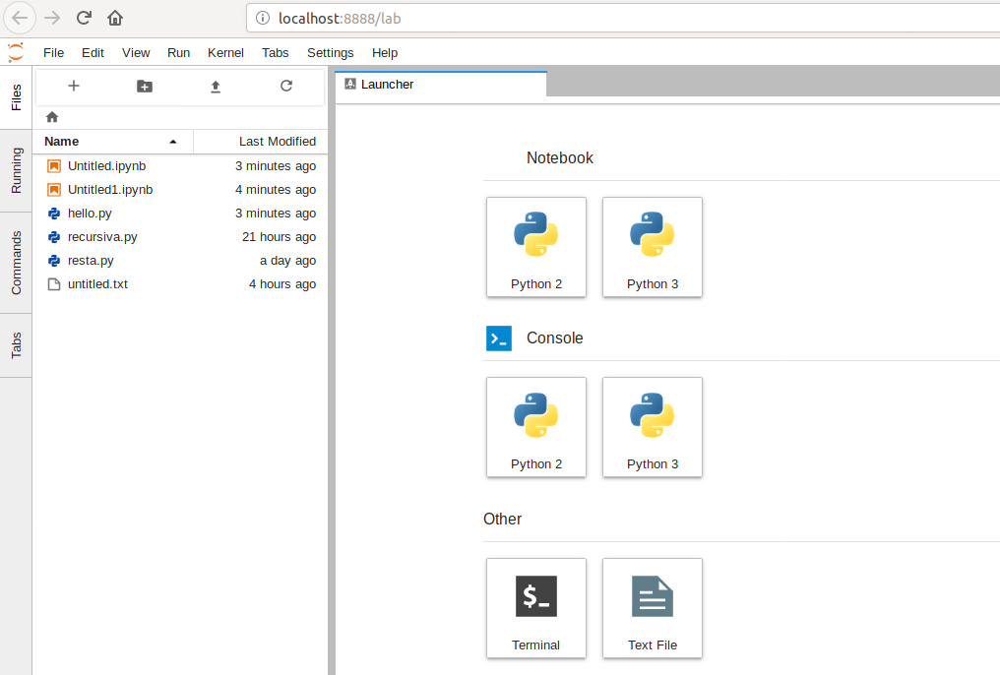

- Jupyter Notebook y Google Colaboratory.
- Python 2 vs 3
- Tipos basicos
- Numeros
- Cadena de caracteres
- Listas
- Diccionarios
- Programación estructurada
- Estructuras de control
- Funciones
Contenido 1era Sesión
Contenido 1era Sesión
Contenido 2da Sesión
Contenido 2da Sesión
- Expresiones regulares
- Archivos
- Programación orientada a objetos.
- Ambientes virtuales (virtualenv) y librerias
- Uso basico de numpy
- Uso basico de matplotlib
Jupyter Notebook y Google Colaboratory
Jupyter Notebook y Google Colaboratory
Jupyter Notebook
Jupyter Notebook
Como aplicación web local, Jupyter Notebook permite escribir y ejecutar codigo desde un navegador web. Los principales lenguajes que soporta son Julia, Python, y R.

Instalación (Windows)
Instalación (Windows)
- Instalar Nodejs
- Instalar Python, versiones 2.7.16 y 3.7.4 (marcar las opciones
add to pathyto all users) - Ejecutar los siguientes comandos en consola
#Procedimiento valido solo para usuarios Windows $ python -m pip install --upgrade pip $ pip -m install jupyterlab $ python -m pip install jupyter $ py -2 -m pip install ipykernel $ py -3 -m pip install ipykernel $ py -2 -m ipykernel install --user $ py -3 -m ipykernel install --user
Ejecutar el comando jupyter lab iniciará la aplicacion web jupyterlab y se abrira una pestaña en el navegador web.

Google Colaboratory
Google Colaboratory
Google Colaboratory es un entorno gratuito de Jupiter Notebook que no requiere configuración.
Permite escribir y ejecutar código, guardar y compartir análisis desde un navegador web.
La gran ventaje de este entorno es el soporte de Google y la integración con google Drive.
Python 2 vs Python 3
Python 2 vs Python 3
Diferencias
Diferencias
| Comparacion | Python2 | Python3 |
|---|---|---|
| Tipo de proyecto | Legacy | Moderno |
Funcion print |
print "hello" | print("hello") |
| Division de enteros | 5/2=2 (5.0/2.0=2.5) | 5/2=2.5 |
| Codificacion de caracteres | ASCII | Unicode |
| Input user | input() y raw_input() |
input() |
| Librerias | Incompatible con Python3 | Incompatible con Python2 |
Tipos basicos
Tipos basicos
Numeros
Numeros
>>> 2 + 2 4 >>> 50 - 5*6 20 >>> (50 - 5*6) / 4 5.0 >>> 8 / 5 # la división simpre retorna un número de punto flotante 1.6 >>> 17 // 3 # la división entera descarta la parte fraccional 5 >>> 17 % 3 # el operado % retorna el resto de la división 2 >>> 2 ** 7 # 2 a la potencia de 7 128
Cadena de caracteres
Cadena de caracteres
Cadena de caracteres
Cadena de caracteres
>>> 'doesn\'t' # usa \' para escapar comillas simples... "doesn't" >>> "doesn't" # ...o de lo contrario usa comillas doblas "doesn't" >>> '"Si," le dijo.' '"Si," le dijo.' >>> "\"Si,\" le dijo." '"Si," le dijo.' >>> s = 'Primera línea.\nSegunda línea.' # \n significa nueva línea >>> s # sin print(), \n es incluído en la salida 'Primera línea.\nSegunda línea.' >>> print(s) # con print(), \n produce una nueva línea Primera línea. Segunda línea.
Listas
Listas
Listas
Listas
Python tiene varios tipos de datos compuestos, usados para agrupar otros valores. El más versátil es la lista, la cual puede ser escrita como una lista de valores separados por coma (ítems) entre corchetes.
>>> cuadrados = [1, 4, 9, 16, 25] >>> cuadrados [1, 4, 9, 16, 25]
Listas: Operaciones inmutables
Listas: Operaciones inmutables
>>> cuadrados = [1, 4, 9, 16, 25] >>> cuadrados[0] # seleccionando un elemento por su index 1 >>> cuadrados[-1] 25 >>> cuadrados[-3:] # nueva lista segun rango [9, 16, 25] >>> cuadrados + [36, 49, 64, 81, 100] # Concatenados [1, 4, 9, 16, 25, 36, 49, 64, 81, 100]
Listas: Operaciones Mutables
Listas: Operaciones Mutables
>>> cubos = [1, 8, 27, 65, 125] >>> 4 ** 3 # el cubo de 4 es 64, no 65! 64 >>> cubos[3] = 64 # reemplazar el valor incorrecto >>> cubos [1, 8, 27, 64, 125] >>> cubos.append(216) # agregar el cubo de 6 >>> cubos.append(7 ** 3) # y el cubo de 7 >>> cubos [1, 8, 27, 64, 125, 216, 343]
Diccionarios
Diccionarios
Diccionarios
Diccionarios
Los diccionarios son estructuras de datos que identifican a sus elementos (no ordenados) mediante una llave unica dentro del diccionario en particular.
>>> diccionario = {'nombre' : 'Albert', 'apellido' : 'Castellano', 'edad' : 27 }
>>> diccionario['nombre']
'Albert'
>>> diccionario['edad']
26
>>> diccionario['apellido']
'Castellano'
Diccionarios: Operaciones
Diccionarios: Operaciones
>>> dict = dict([('sape', 4139), ('guido', 4127), ('jack', 4098)])
>>> dict['guido']
4127
>>> versiones = {'python': 2.7, 'zope': 2.13, 'plone': None}
>>> versiones['plone'] = 5.1
>>> versiones
{'python': 2.7, 'zope': 2.13, 'plone': 5.1}
>>> versiones['plone']
5.1
Programación estructurada
Programación estructurada
Programación estructurada
Programación estructurada
Se basa en el uso de funciones, subrutinas y las siguientes tres estructuras de control:
- Secuencia: ejecución de una sentencia tras otra.
- Selección o condicional: ejecución de una sentencia o conjunto de sentencias, según el valor de una variable booleana.
- Iteración (ciclo o bucle): ejecución de una sentencia o conjunto de sentencias, mientras una variable booleana sea verdadera.
Estructuras de control
Estructuras de control
Condicional if
Condicional if
numero = int(input("\nIngresa un número entero, por favor: "))
if numero < 0:
numero = 0
print('El número ingresado es negativo cambiado a cero.\n')
elif numero == 0:
print('El número ingresado es 0.\n')
elif numero == 1:
print('El número ingresado es 1.\n')
else:
print('El número ingresado es mayor que uno.\n')
Bucle while
Bucle while
promedio, total, contar = 0.0, 0, 0
print("Introduzca la nota de un estudiante (-1 para salir): ")
grado = int(input())
while grado != -1:
total = total + grado
contar = contar + 1
print("Introduzca la nota de un estudiante (-1 para salir): ")
grado = int(input())
print("La suma de notas es: " + str(total))
promedio = total / contar
print("Promedio de notas del grado escolar es: " + str(promedio))
Bucle for
Bucle for
db_connection = "127.0.0.1","5432","root","nomina"
for parametro in db_connection:
print parametro
else:
print("""El comando PostgreSQL es:
$ psql -h {server} -p {port} -U {user} -d {db_name}""".format(
server=db_connection[0], port=db_connection[1],
user=db_connection[2], db_name=db_connection[3]))
Funciones
Funciones
Funciones
Funciones
Una función es un bloque de código con un nombre asociado, que recibe cero o más argumentos como entrada, sigue una secuencia de sentencias y devuelve un valor.

Utilidad
Utilidad
- Modularización: permite segmentar un programa complejo en una serie de partes o módulos más simples, facilitando así la programación y el depurado.
- Reutilización: permite reutilizar una misma función en distintos lugares.
Creando funciones
Creando funciones
def NOMBRE(LISTA_DE_PARAMETROS):
"""DOCSTRING_DE_FUNCION"""
SENTENCIAS
RETURN [EXPRESION]
NOMBRE, es el nombre de la función.LISTA_DE_PARAMETROS, es la lista de parámetros que puede recibir una función.DOCSTRING_DE_FUNCION, es la cadena de caracteres usada para documentar la función.SENTENCIAS, es el bloque de sentencias en código fuente Python que realizar cierta operación dada.RETURN, es la sentencia return en código Python.EXPRESION, es la expresión o variable que devuelve la sentencia return.
Ejemplo
Ejemplo
>>> def hello(arg):
... """El docstring de la función"""
... print("Hello " , arg , " !")
>>>
>>> hello("World")
Hello World
- Las sentencias deben estar indentadas.
- Por defecto las funciones retornan el valor
None
Funciones, Argumentos y parametros
Funciones, Argumentos y parametros
>>> def resta(a, b): ... return a - b ... >>> resta(30, 10) 20
>>> def resta(a, b): ... return a - b ... >>> resta(b=30, a=10) -20
Funciones recursivas
Funciones recursivas
Las funciones recursivas son funciones que se llaman a sí mismas durante su propia ejecución. Ellas funcionan de forma similar a las iteraciones, pero debe encargarse de planificar el momento en que dejan de llamarse a sí mismas o tendrá una función.

Ejemplos
Ejemplos
# -*- coding: utf-8 -*-
def cuenta_regresiva(numero):
numero -= 1
if numero > 0:
print(numero)
cuenta_regresiva(numero)
else:
print("Boooooooom!")
print("Fin de la función" + str(numero))
def factorial(numero):
print("Valor inicial ->",numero)
if numero > 1:
numero = numero * factorial(numero -1)
print("valor final ->" + str(numero))
return numero
>>> recursiva.cuenta_regresiva("World")
>>> recursiva.factorial(100)
Funciones anónimas
Funciones anónimas
Una función anónima, como su nombre indica, es una función sin nombre. La unica manera para usar estas funciones es primero guardandolas en una variable.
El contenido de una función anónima debe ser una única expresión en lugar de un bloque de acciones.
>>> def doble(numero): return numero*2 ... >>> doble(2) 4
>>> doble = lambda numero: numero*2 >>> doble(2) 4
Funciones de orden superior
Funciones de orden superior
Las funciones de orden superior son funciones que pueden recibir como parámetros otras funciones y/o devolverlas como resultados.
Las funciones de orden superior más usadas son las siguientes.
- filter
- map
- reduce
Funciones de orden superior
Funciones de orden superior
>>> numeros = [2, 5, 10, 23, 50, 33] >>> filter(lambda numero: numero%5 == 0, numeros) [5, 10, 50] >>> map(lambda x: x*2, numeros) [4, 10, 20, 46, 100, 66] >>> a = [1, 2, 3, 4, 5] >>> b = [6, 7, 8, 9, 10] >>> map(lambda x,y : x*y, a,b) [6, 14, 24, 36, 50] >>> from functools import reduce >>> reduce(lambda x,y : x*y, [1, 2, 3, 4], 1) #lambda, iterable , valor inicial
Ejercicios
Ejercicios
Gracias